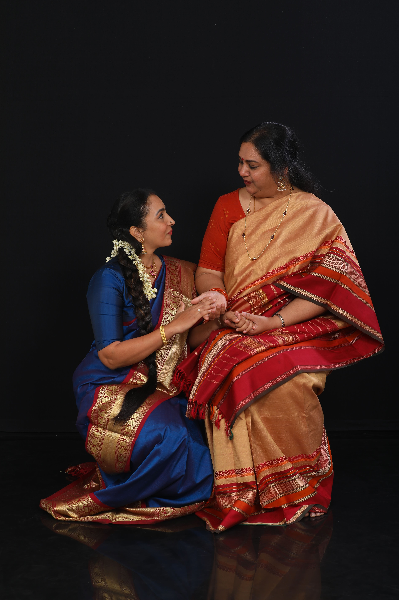
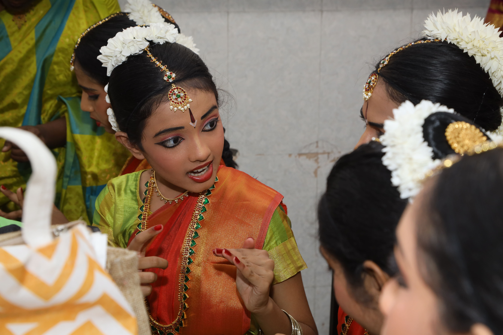
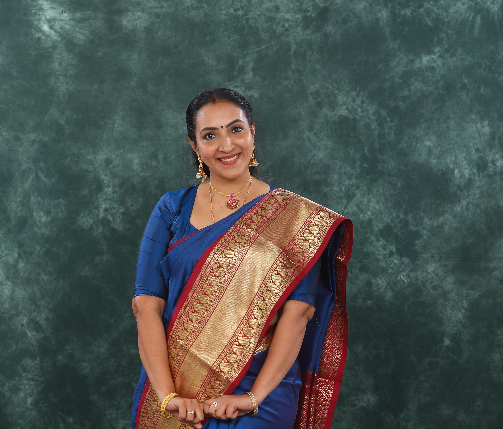

Guru-shishya
Personalised mentorship passed down through generations, rooted in tradition.
Admissions Open • Kilpauk, Chennai
A sacred home for dancers who seek elegance, discipline, and a deeply rooted cultural journey.

Every lesson is shaped to build rhythm, confidence, and a timeless sense of grace.
The institute story
Founded in 2018, Nalinam Nrithyalaya is a dedicated institution for Bharatanatyam in Kilpauk, Chennai, nurturing around 25 students in India as well as abroad with a strong emphasis on tradition, discipline, and aesthetic excellence. As an affiliate of CAPA, the institution follows the distinguished bani – Chitrabani and teaching methodology of Guru Smt. Chitra Visweswaran. The institution is committed to a holistic approach to dance education. Along with rigorous training in Bharatanatyam, students are also guided in carnatic music, body strengthening, and yoga, recognizing that these are integral to developing stamina, alignment, rhythm, and expressive depth in dance. Over the years, Nalinam Nrithyalaya has actively contributed to the cultural landscape through annual showcases, dance productions, and participation in various cultural programs and temple festivals.
Students are trained not only in technique but also in the finer nuances of bhava, laya, and abhinaya, enabling a well-rounded and immersive understanding of our bani. With a vision to preserve and propagate the rich heritage of Bharatanatyam and chitrabani, the institution continues to inspire young dancers to pursue the art with sincerity, grace, and devotion with the guidance of its parent institution CAPA.

Why choose us
Personalised mentorship passed down through generations, rooted in tradition.
Classes accompanied by live percussion and vocal support for authentic training.
Regular stage exposure from temple festivals to grand Arangetram showcases.
Signature pathways
Beginners • 6+ years
Introduction to rhythmic patterns, basic postures, and the beauty of adavus.
Join this batch2+ years experience
Complex sequences, expressive storytelling, and deeper engagement with abhinaya.
Join this batchGallery & performances



Upcoming highlights
From the studio
Student voices
“Nalinam has transformed my daughter’s confidence. The training is rigorous yet deeply nurturing.”
“Every session is a journey into tradition. I feel rooted, expressive, and more connected to my culture.”
“The perfect blend of discipline and artistry. The performances are truly world-class.”

Founder & artistic director
With deep-rooted training and a genuine passion for teaching, each student receives mentorship that balances discipline, beauty, and heart.
Frequently asked
We teach students from early beginners to adults, with classes tailored for young children, teenagers, and mature learners. Each program supports steady progress in technique and expressive performance.
No prior experience is required. Beginners begin with foundational exercises, while advanced students receive deeper training in abhinaya, rhythm, and stage presence.
Classes are available on weekdays and weekends, with flexible batches for school students and working adults. Contact us to view the current schedule and book your preferred slot.
Reserve your place
Visit us in Kilpauk or get in touch for admission guidance, class schedules, and performance programs.